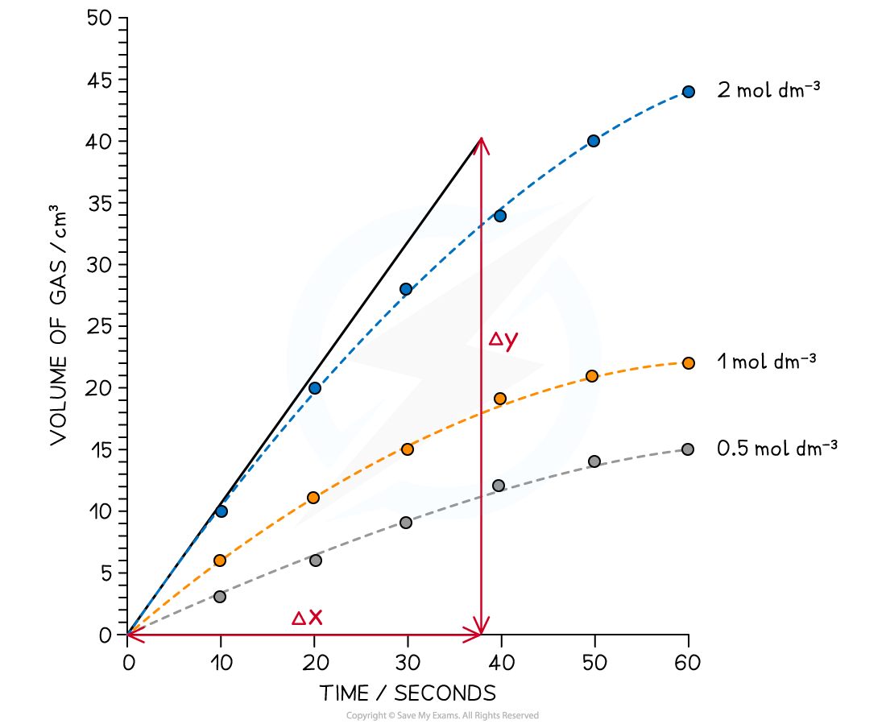
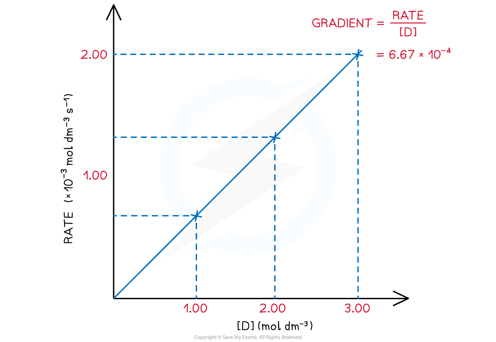
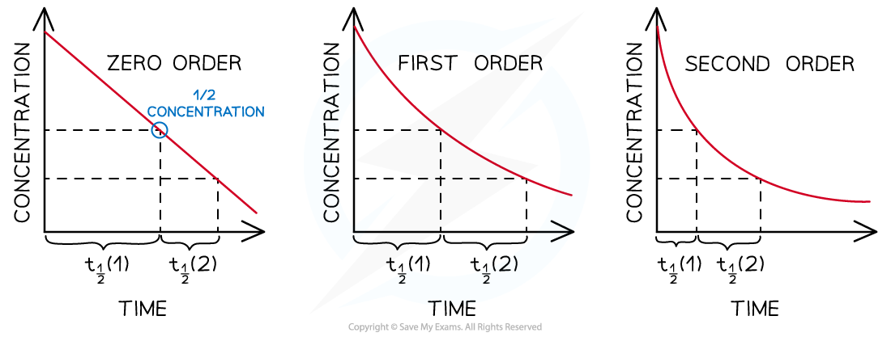
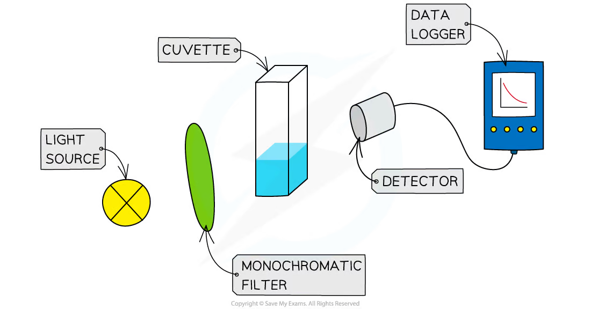
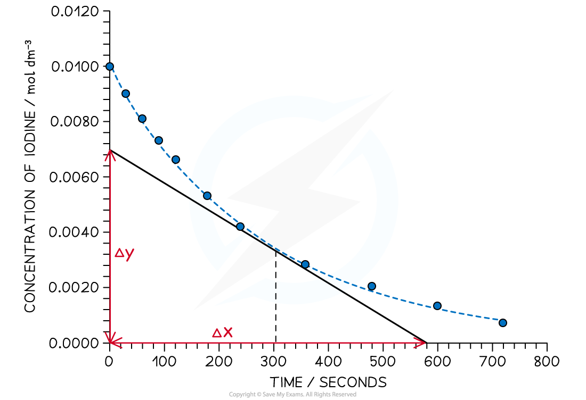
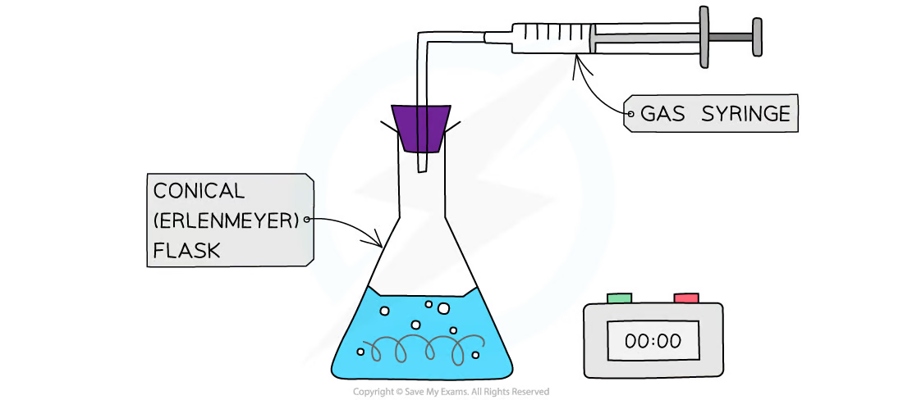
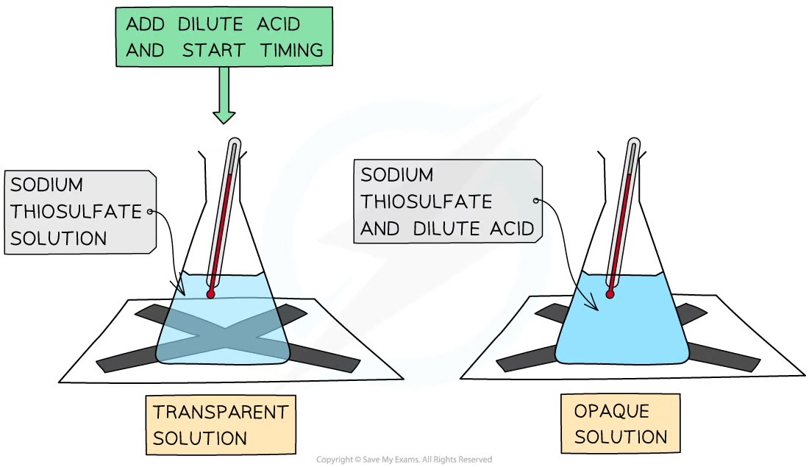
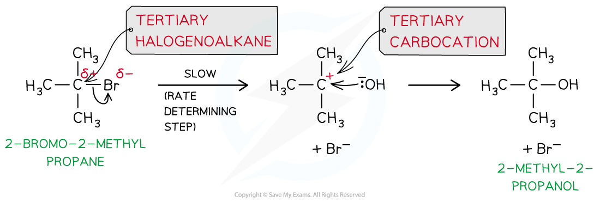
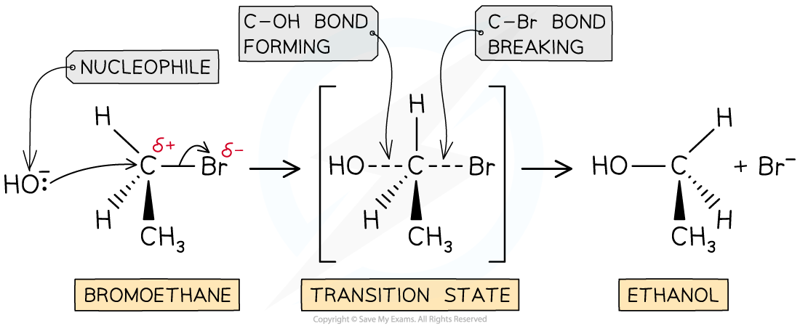
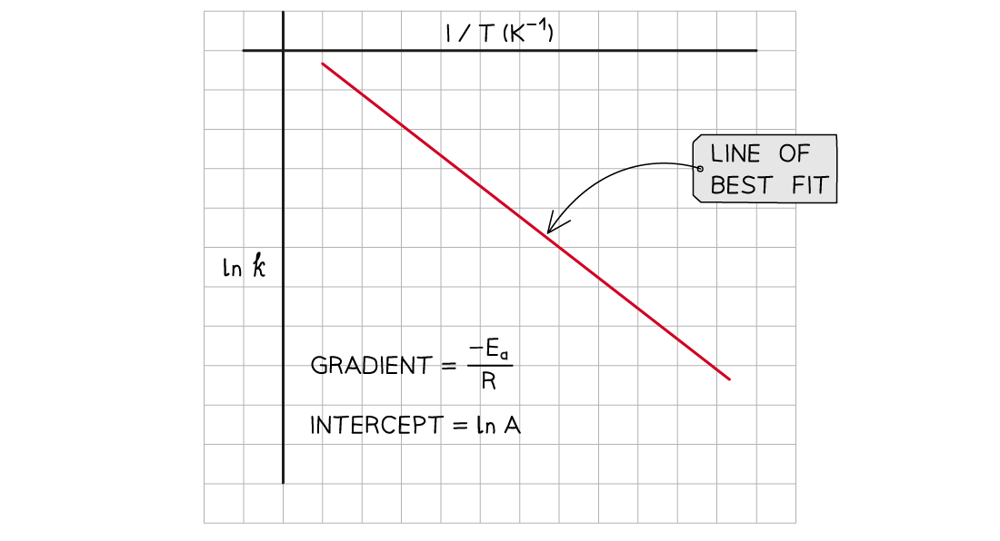

4.1 Kinetics · Topic 11
Rates, rate equations, mechanisms, activation energy and catalysis
4.1 Kinetics · Topic 11
本页严格按 Pearson Edexcel International Advanced Level Chemistry specification 的 Topic 11: Kinetics 编排。Unit 2 Topic 9A 的 collision theory 是本主题已假定的前置知识；本页只用一小节回顾它，不把 9A 当作独立章节展开。内容与本章提供的 4.1 Kinetics.pdf.pdf 笔记对应。
Learning objectives
学完本章后，你应该能够：
- recall collision theory，并用它解释 rate 的变化；
- 用 \(1/t\) 或 suitable graph 的 gradient 计算 rate，包括在指定时刻作 tangent；
- 使用并解释 \(\text{rate}=k[A]^m[B]^n\)，判断 \(0\)、\(1\)、\(2\) order；
- 从 initial-rate data、rate-concentration graph 和 concentration-time graph 推断 order；
- 计算 rate constant \(k\)、units 和 half-life，并用 constant half-life 识别 first-order reaction；
- 为不同 reaction 选择合适的 rate-measurement technique，解释 initial-rate method 和 continuous-monitoring method；
- 根据 rate equation 推断 rate-determining step，并提出与 stoichiometric equation 一致的 mechanism；
- 用 kinetics evidence 解释 tertiary 和 primary halogenoalkane 的 SN1 / SN2 hydrolysis；
- 分析 acid-catalysed iodination of propanone，并写出 rate equation；
- 使用 Arrhenius equation 或 Arrhenius plot 求 activation energy；
- 解释 heterogeneous catalyst 如何提供 reaction surface，以及 catalysts 如何支持更 sustainable 的 industrial chemistry。
Prerequisite link: 9A rate of reaction and collision theory
What is rate of reaction?
Rate of reaction 指 reactant 或 product 的 amount / concentration 在单位时间内的变化。使用 concentration data 时，常用单位为 \(\mathrm{mol\,dm^{-3}\,s^{-1}}\)。
对于 reactant，concentration 随时间下降，因此 rate 取 negative gradient 的 magnitude；对于 product，concentration 上升，gradient 为正。
实验中可用来追踪 reaction progress 的 observable change 包括：
- gas escape 造成的 mass loss；
- gas production 的 volume；
- colour 或 absorbance（通常用 colorimetry 测量）；
- pH 或 electrical conductivity；
- 通过 sampling 后 titration 得到的 concentration。
简单的 average rate expression 为：
\[ \text{rate}=\frac{\text{change in amount or concentration}}{\text{time taken}} \]
Rate from a graph
对于 concentration-time、mass-time 或 volume-time graph：
\[ \text{rate}=\left|\frac{\Delta y}{\Delta t}\right| \]
在 \(t=0\) 处作 tangent 可得到 initial rate；要计算某个 later time 的 rate，则在该时刻作 tangent。坐标轴必须标明 units，计算 gradient 时应使用尽量大的 triangle。

Collision theory
按照 collision theory，particles 必须满足以下条件才会发生 reaction：
- collision energy 足够高，至少达到 activation energy \(E_a\)；
- orientation 合适，使所需的 bonds 能够 break 和 form。
只有这样的 successful collision 才会产生 reaction。某个 factor 若能增加 successful collision frequency，或增加 energy \(\geq E_a\) 的 collision fraction，就会提高 rate。
| Change | 用 collision theory 解释 |
|---|---|
| Higher concentration | 单位体积内 particles 更多，collision frequency 增加。 |
| Higher pressure of gases | particles 间距离更近，collision frequency 增加。 |
| Greater surface area of a solid | 暴露在 surface 上、可参与 collision 的 particles 更多。 |
| Higher temperature | particles 运动更快，且 energy \(\geq E_a\) 的 fraction 增大。 |
进行 fair rate experiment 时，一次只改变一个 factor，并控制 temperature、volumes、total surface area 及其他 concentrations。
11.1 Rate equations and orders
Rate equation
Rate equation 描述 rate 与影响 reaction rate 的 species concentrations 之间的关系：
\[ \text{rate}=k[A]^m[B]^n \]
\(k\) 是 rate constant；\(m\) 是相对于 \(A\) 的 order，\(n\) 是相对于 \(B\) 的 order。Overall order 为 \(m+n\)。Edexcel specification 要求的 order 为 \(0\)、\(1\) 和 \(2\)。
Rate equation 必须通过 experiment 得到，不能直接从 balanced stoichiometric equation 的 coefficients 读取。Product 或 catalyst 可以出现在 rate equation 中；在 mechanism 中先生成、后被消耗的 intermediate 不会出现。

Meaning of the order
| \(A\) 的 order | 改变 \([A]\) 的 effect | Rate equation term |
|---|---|---|
| \(0\) | 改变 \([A]\) 不影响 rate | omit \([A]\)，因为 \([A]^0=1\) |
| \(1\) | \([A]\) 加倍，rate 也加倍 | \([A]\) |
| \(2\) | \([A]\) 加倍，rate 变为 4 倍 | \([A]^2\) |
Order 是 experimental result，不一定等于 stoichiometric coefficient。
Worked example · order and concentration changes
对于 decomposition reaction：
\[\ce{2N2O5(g) -> 4NO2(g) + O2(g)}\]
其 rate equation 为 \(\text{rate}=k[\ce{N2O5}]\)。
\(\ce{N2O5}\) 的 power 为 1，所以 reaction 对 \(\ce{N2O5}\) 为 first order。如果 \([\ce{N2O5}]\) 变为 3 倍，rate 也变为 3 倍。
11.2–11.5 Determining orders, \(k\) and half-life
Initial-rate method
比较两组 experiment，并确保只有一个 initial concentration 发生变化。
| \([A]\) 的变化 | Initial rate 的变化 | \(A\) 的 order |
|---|---|---|
| 加倍 | 不变 | \(0\) |
| 加倍 | 加倍 | \(1\) |
| 加倍 | 变为 4 倍 | \(2\) |
对每个 reactant 重复上述过程。也可以使用 clock reaction 作为 approximation：如果每次使用相同的 visible endpoint，则 \(1/t\) 与 initial rate 成正比。
For the example in the note:
\[\ce{(CH3)3CBr + OH- -> (CH3)3COH + Br-}\]
\([\ce{(CH3)3CBr}]\) 加倍时 rate 加倍，而 \([\ce{OH-}]\) 加倍时 rate 变为 4 倍。因此：
\[\text{rate}=k[\ce{(CH3)3CBr}][\ce{OH-}]^2\]
Worked example · calculating \(k\) and its units
For:
\[\ce{Na2CO3(aq) + 2Cl-(aq) + 2H+(aq) -> 2NaCl(aq) + CO2(g) + H2O(l)}\]
实验得到的 rate equation 为 \(\text{rate}=k[\ce{Na2CO3}][\ce{Cl-}]\)。某次 experiment 中，\([\ce{Na2CO3}]=0.0250\ \mathrm{mol\,dm^{-3}}\)、\([\ce{Cl-}]=0.0125\ \mathrm{mol\,dm^{-3}}\)，且 rate \(=4.38\times10^{-5}\ \mathrm{mol\,dm^{-3}\,s^{-1}}\)。
\[ k=\frac{\text{rate}}{[\ce{Na2CO3}][\ce{Cl-}]} =\frac{4.38\times10^{-5}}{(0.0250)(0.0125)} =1.40\times10^{-1} \]
因为该 reaction 的 overall order 为 2：
\[ [k]=\frac{\mathrm{mol\,dm^{-3}\,s^{-1}}}{(\mathrm{mol\,dm^{-3}})^2} =\mathrm{dm^3\,mol^{-1}\,s^{-1}} \]
Answer： \(k=1.40\times10^{-1}\ \mathrm{dm^3\,mol^{-1}\,s^{-1}}\)。
Concentration-time and rate-concentration graphs
对于 concentration-time graph：
- zero order：constant negative gradient 的 straight line；
- first order：向下的 curve，half-life 近似 constant；
- second order：下降更快的 curve，successive half-lives 逐渐增加。
对于 rate-concentration graph：
- zero order：horizontal line，\(\text{rate}=k\)；
- first order：经过 origin 的 straight line，\(\text{rate}=k[A]\)；
- second order：upward curve，\(\text{rate}=k[A]^2\)。

Half-life
Half-life \(t_{1/2}\) 是 reactant concentration 降至原来一半所需的时间。
| Reaction order | Successive half-lives 的变化 |
|---|---|
| zero | decrease |
| first | remain constant |
| second | increase |
Constant half-life 可以识别 first-order reaction。对于 first-order reaction：
\[ k=\frac{0.693}{t_{1/2}} \]
如果要求 \(k\) 的单位为 \(\mathrm{s^{-1}}\)，则 \(t_{1/2}\) 必须换算为 seconds。
Worked example · first-order half-life
某 first-order reaction 的 half-life 为 \(10.0\) min。Calculate \(k\)。
\[t_{1/2}=10.0\times60=600\ \mathrm{s}\]
\[k=\frac{0.693}{600}=1.16\times10^{-3}\ \mathrm{s^{-1}}\]
11.3–11.4 Obtaining rate data
Choosing a method
选择一个会随 reaction progress 规律变化、并且与 concentration 或 amount 成正比（或可以建立关系）的 measurement。
| Technique | 适用情况 | Typical graph |
|---|---|---|
| Titration | 可以取出 sample，并分析剩余 reactant | concentration-time |
| Colorimetry | reaction 中有 coloured reactant 或 product | absorbance 或 concentration-time |
| Mass change | gas escape 且 mass change 足够明显 | mass-time |
| Gas volume | reaction 产生并可收集 gas | volume-time |
| Clock reaction | 可以重复达到相同 visible endpoint | \(1/t\) 作为 initial-rate proxy |
Method 必须足够快，能够收集有意义的 data；但也不能快到使 mixing、sampling 或 start timer 的时间成为主要 uncertainty。

Continuous monitoring and tangents
Continuous monitoring 在 reaction 进行过程中记录大量 readings，得到 smooth 的 concentration-time、mass-time 或 volume-time curve。在指定 time 作 tangent，再计算 gradient。

在 gas-volume experiment 中，如果 gas 不易溶解且 production volume 足够大，可使用 gas syringe。如果 gas 在 water 中不太 soluble，也可用 measuring cylinder over water。

Clock reactions and titration
Sampling 和 titrating 可能会 disturb reaction，因此常在出现固定的 visible change 时 stop the clock。在 disappearing-cross experiment 中，向 sodium thiosulfate 中加入 acid，最终生成的 sulfur precipitate 会遮挡 cross。

对于相同 endpoint，time 越短表示 reaction 越快。可将 \(1/t\) 视为与 initial rate 成正比，但必须说明这是 approximation，并保持 endpoint、volumes 和 viewing conditions 一致。
11.7–11.9 Rate-determining steps and mechanisms
Rate-determining step
Rate-determining step 是最慢的 elementary step，控制 overall rate。出现在 rate-determining step 中的 species，有助于解释 rate equation 中的 concentration terms。
Intermediate 在一个 step 中生成，并在后续 step 中被消耗。将 elementary steps 相加时 intermediate 会 cancel，因此不会出现在 overall equation 或 rate equation 中。
检验 proposed mechanism 时：
- 将 elementary steps 相加并 cancel intermediates；
- 检查结果是否为题目给出的 overall equation；
- 使用 slow step 预测 rate equation；
- 将 prediction 与 experimental rate equation 比较。
Worked example · mechanism from a rate equation
For:
\[\ce{NO2(g) + CO(g) -> NO(g) + CO2(g)}\]
若 \(\text{rate}=k[\ce{NO2}]^2\)，一种 possible mechanism 为：
\[ \begin{aligned} \text{slow: }&\ce{2NO2 -> NO + NO3}\\ \text{fast: }&\ce{NO3 + CO -> NO2 + CO2} \end{aligned} \]
将两个 steps 相加后，\(\ce{NO3}\) 和一个 \(\ce{NO2}\) cancel，得到 overall equation。Slow step 中有两个 \(\ce{NO2}\) particles、没有 \(\ce{CO}\)，与 rate equation 一致。
SN1 and SN2 evidence
在 halogenoalkane hydrolysis 中，rate equation 可以为 mechanism 提供 evidence。
| Mechanism | Favoured structure | Rate equation | Rate-determining event |
|---|---|---|---|
| SN1 | tertiary halogenoalkane | \(\text{rate}=k[\text{halogenoalkane}]\) | C-X bond break，形成 carbocation |
| SN2 | primary halogenoalkane | \(\text{rate}=k[\text{halogenoalkane}][\text{nucleophile}]\) | nucleophile attack 与 C-X bond break 同时发生 |
Secondary halogenoalkane 可能同时显示两种 pathway 的 evidence。Kinetics 可以支持或 reject 某个 proposed mechanism，但单靠 kinetics 不能 prove 唯一的 mechanism。


11.6 Acid-catalysed iodination of propanone
Core practical 9a: iodine-propanone reaction
在 acidic solution 中，reaction 为：
\[\ce{CH3COCH3(aq) + I2(aq) -> CH3COCH2I(aq) + H+(aq) + I-(aq)}\]
可以用 continuous colorimetry 跟踪 reaction；也可以 withdraw samples，用 sodium hydrogencarbonate stop reaction，再以 starch 为 indicator，用 sodium thiosulfate titrate iodine。
如果 propanone 和 acid 处于 large excess，它们的 concentrations 可近似视为 constant。Iodine 的 concentration-time graph 是 constant gradient 的 straight line，因此 reaction 对 iodine 为 zero order。Rate equation 为：
\[ \text{rate}=k[\ce{CH3COCH3}][\ce{H+}] \]
该 experiment 将 measured rate 与 rate-determining step 中的 species 联系起来：propanone 和 hydrogen ions 参与其中，而 iodine 不参与。
Core practical 9b 是 clock reaction 的 investigation，例如 Harcourt-Esson iodine clock。保持 endpoint fixed，比较不同 initial concentrations 下的 \(1/t\)，即可得到关键 evidence。
11.10 Activation energy and the Arrhenius equation
Activation energy
Activation energy \(E_a\) 是 successful collision 所需的 minimum energy。Temperature 升高时，energy 至少达到 \(E_a\) 的 molecules fraction 增加，因此 rate constant 和 rate 都增加。
对于相同 reaction 和 mechanism，temperature 改变、加入 catalyst 或更换 catalyst 都会使 \(k\) 改变。不同 temperature 下不能把 \(k\) 当作 constant。
Arrhenius equation 为：
\[ k=Ae^{-E_a/(RT)} \]
其中 \(A\) 是 Arrhenius constant，\(R=8.31\ \mathrm{J\,mol^{-1}\,K^{-1}}\)，\(T\) 必须使用 kelvin，\(E_a\) 的单位为 \(\mathrm{J\,mol^{-1}}\)。
Linear Arrhenius form
两边取 natural logarithm：
\[ \ln k=\ln A-\frac{E_a}{RT} \]
在 \(\ln k\) against \(1/T\) 的 graph 中：
\[ \text{gradient}=-\frac{E_a}{R},\qquad \text{intercept}=\ln A \]
因此：
\[ E_a=-(\text{gradient})R \]
使用 \(1/T\) 时单位必须是 \(\mathrm{K^{-1}}\)，不能使用 degrees Celsius。如果 graph 使用 \(10^3/T\)，计算 gradient 时要把 factor \(10^3\) 纳入换算。

Worked example · activation energy from the Arrhenius equation
在 \(T=400\ \mathrm{K}\) 时，\(k=6.25\times10^{-4}\ \mathrm{s^{-1}}\)，\(A=4.6\times10^{14}\ \mathrm{s^{-1}}\)。
先 rearrange：
\[E_a=(\ln A-\ln k)RT\]
\[ E_a=[\ln(4.6\times10^{14})-\ln(6.25\times10^{-4})](8.31)(400) \]
\[E_a=1.29\times10^5\ \mathrm{J\,mol^{-1}}=129\ \mathrm{kJ\,mol^{-1}}\]
11.11–11.13 Catalysis, sustainability and core practicals
Heterogeneous catalysts
A heterogeneous catalyst 与 reactants 处于不同 physical state，常见情况是 solid catalyst 与 gaseous reactants。它提供一个 surface，使 reactants 可以：
- adsorb 到 active sites；
- 与 surface form bonds，并使原有 bonds weakened；
- 通过 lower activation energy 的 alternative route 更容易发生 reaction；
- 作为 products desorb，使 active sites 再次可用。
Catalyst 在 overall reaction 中不会被消耗，也不会改变 equilibrium position。它通过降低 alternative pathway 的 activation energy，同时提高 forward 和 reverse reactions 的 rate。
在 industry 中，catalysts 可以降低 energy demand、允许较低的 operating temperatures 或 pressures、提高 throughput 并减少 waste，从而使 process 更 sustainable。Evaluation 时还应考虑 catalyst cost、poisoning、recovery，以及 catalyst manufacture 所需的 energy。
Core practical 10: finding activation energy
在 several temperatures 下测量 rate constant，同时控制 concentrations、volumes、apparatus 和 analysis method。然后：
- 将所有 temperatures 换算为 kelvin；
- 计算 \(\ln k\) 和 \(1/T\)；
- 作 \(\ln k\) against \(1/T\) 的 graph，并画 line of best fit；
- 使用相距较远的两个 points 计算 gradient；
- 使用 \(E_a=-(\text{gradient})R\)；
- 将 activation energy 用 \(\mathrm{kJ\,mol^{-1}}\) 表示，并在题目要求时写出 uncertainty 或 limitations。
Suggested rate investigations 包括 marble chips 与 hydrochloric acid、magnesium 与 hydrochloric acid、colorimetric iodine-propanone experiment，以及 cobalt(II) salts 的 catalysis。
Exam checklist
Source note
本页的章节素材来自项目内 Note per Chapter/Note per Chapter/4.1 Kinetics.pdf.pdf；考纲校对以 International-A-Level-Chemistry-Spec.pdf 的 Topic 11: Kinetics 为主，Topic 9A 仅作为已假定的前置知识。图像已从笔记页中独立裁出并存放在 assets/notes/kinetics/。